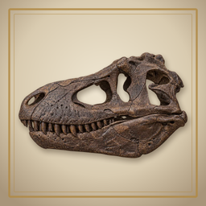

かせきほり サポートFossil Atlas: Dinosaur Dig — Support
お問い合わせ
メール：fossilatlas.support@icloud.com
ご質問・不具合のご報告、図鑑の内容の誤りのご指摘はこちらへ。お使いの端末（例：iPhone 15）と、起きたこと（誤りの場合は種の名前と、どこが違うか）を添えていただけると助かります。
掘る
世界の実在の化石産地で、指で土を払って化石を掘り出します。払う速さが力加減です。骨の近くを乱暴に払うと、ヒビが入ったり欠けたりします。珍しい化石ほどもろくなっています。
無料の発掘は1時間に1回、5回までたまります。はじめから15回掘れます（特典10回＋無料5回）。足りないときは、アプリの購入画面で発掘許可（回数）を買えます。定期購入（サブスクリプション）と広告はありません。
博物館と図鑑
掘った化石はすべて収蔵番号つきで「収蔵庫」に残ります。恐竜の骨は骨格に組み込まれ、同じ部位がまた出たときは、良いほう（大きい・欠けが少ない）が骨格に残ります。予備の骨は研究に回して研究ポイントにできます。
出る化石と確率
産地ごと・地層ごとに出る化石と確率は、アプリの図鑑で確かめられます。骨そのものをお金で買うことはできません。
化石の情報について
種・産地・地層・年代は、論文や博物館の資料など2つ以上の出典をもとに書いています。説が分かれることには印をつけています。誤りに気づいたら、上のメールでお知らせください。アプリ内の発掘は、許可を得た研究発掘として描いています。実際の化石の採集は、各国・各地域の法律に従ってください。
購入と復元
購入の内容と復元のしかたは、アプリの購入画面に書いてあります。買えるのは発掘許可（回数）だけで、定期購入はありません。
記録について
見つけた化石や記録はこの端末の中に保存されます。アカウント登録はありません。
Contact
Email: fossilatlas.support@icloud.com
For questions, bug reports, and corrections to the field guide. Please tell us your device (for example, iPhone 15) and what happened (for a correction, the species and what is wrong).
Digging
Dig real fossil sites around the world by brushing the soil away with your finger. How fast you brush is how hard you brush: rough strokes near a bone can crack or chip it, and rarer fossils are more fragile.
A free dig comes back every hour, up to five. You start with 15 digs (10 welcome digs plus 5 free). If you need more, dig permits can be bought on the purchase screen in the app. There are no subscriptions and no ads.
Museum and field guide
Every fossil you dig is kept in Storage with its own museum number. Dinosaur bones are placed in their skeleton; if the same part turns up again, the better one (larger, less damaged) stays on show. Spare bones can be handed to research for research points.
Finds and odds
The finds and odds for every site and layer are shown in the field guide. Bones themselves can never be bought.
About the science
Species, sites, formations and ages are based on at least two sources such as papers and museum records, and debated points are marked. If you spot a mistake, please email us. Digs in the app are shown as permitted research excavations; in real life, please follow the laws of each country and region on collecting fossils.
Purchases and restore
What each purchase includes, and how to restore purchases, is shown on the purchase screen in the app. The only purchases are dig permits; there are no subscriptions.
Your records
Your finds and records are stored on this device. There are no accounts.